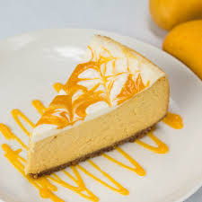

Mango Cheesecake
Mango cheesecakes are one of my absolute favorite desserts. Mangoes on their
own are so sweet and delicious. Adding it to nearly anything can enhance and create
ultimate perfection. From raw mangoes used in savory mango curries, to mango lassi,
you can use mangoes to make a variety of tasty dishes!
This no-bake mango cheesecake is simple and easy to make. You will need your main
ingredients of blended mangoes or mango pulp, full-fat cream cheese, and white chocolate.
In addition to the white chocolate, you will need gelatin or agar agar powder (vegan option) to
help the cheesecake set.
Ingredients
For the base
- 1 1/3 C graham crackers
- 3 tablespoon + 1 teaspoon melted butter
For the cake filling
- 10.5 oz full fat cream cheese
- 2/3 C whipping cream
- 7.5 oz whitle chocolate
- 1 1/2 C canned mango pulp
- 2 tablespoon lemon juice
- 1 tablespoon gelatin or agar agar powder
- 1/4 C water
For the topping
Steps
For the base
- Crush the graham crackers into crumbs. You can use a food processor or
a rolling pin against the graham crackers in an enclosed bag.
- Add the melted butter into the food processor, or combine the crumbs
and melted butter in a bowl.
- Pour the base mixture into a 7-inch springform pan. Press the crumbs against the base of the pan,
and refrigerate for 30 minutes.
For the cake
- In a large bowl, add the cream cheese and whisk until fluffy.
Add the whipping cream and mix until the mixture is thicker. Do not over-mix
to prevent the cream from splitting
- Melt the white chocolate in a microwave or double boiler. Watch chocolate
carefully to prevent burning or burnt bits.
Immediately add chocolate to cheese mixture to prevent it from seizing up.
- Add the mango pulp and lemond juice to the mixture. Mix the ingredients
thoroughly and set aside.
- In a new bowl, add water and powdered agar agar powder or gelatin. Heat mixture in microwave in high for about
1 minute until the mixture is combined and runs in a syrup-like consistency. Be careful not to overheat the mixture as
the powder can clump together and will not mix well with your cake filing.
- Add tempered agar agar powder to the cheesecake mixture and stir right away.
- Pour mixture into the previously chilled pan over the base. Hit the pan
against your table surface to even out the texture and release air bubbles.
- Allow your cheesecake to chill for at least 8 hours before serving. To serve, always keep your cheesecake refrigerated up until it is ready to eat.
You can cut the cake into slices and enjoy this delicious dessert!